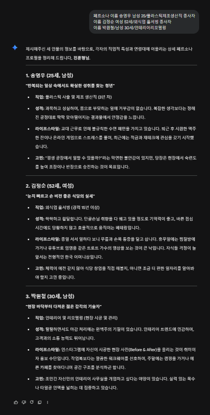
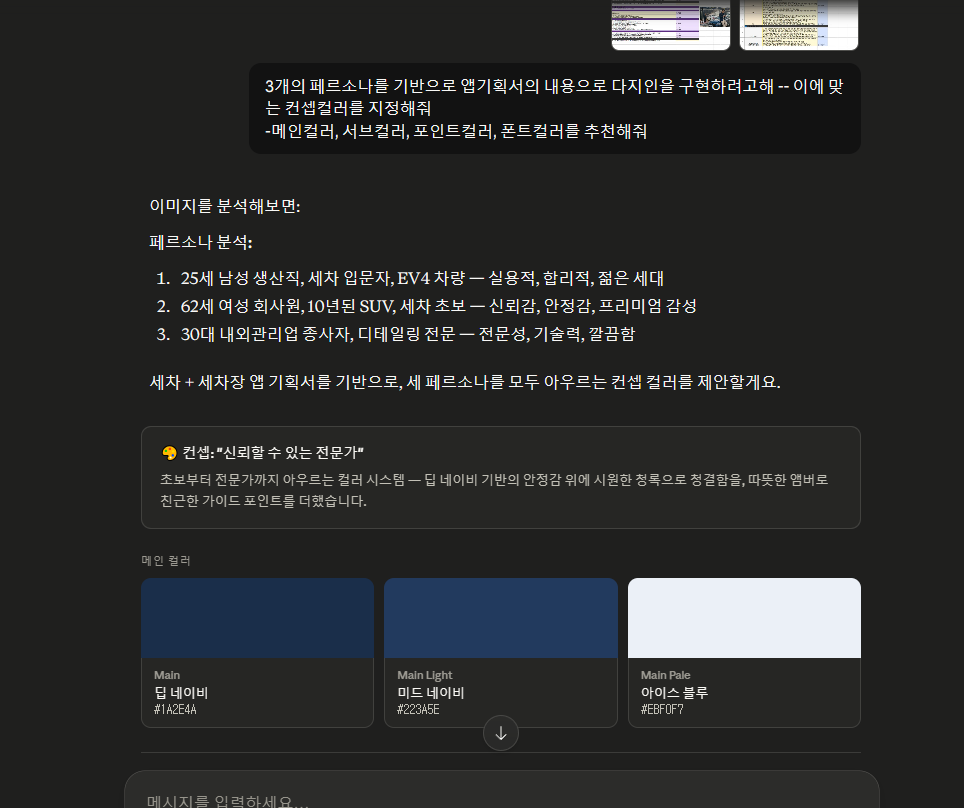

이다현, 28세
이다현, 28세
신차에 셀프세차 괜찮을까요?
신차 도장면은 초기 경화 기간(약 30일)이 있어, 이 기간 동안은 노터치 세차를 권장합니다 ✅
주변 노터치 세차장 찾아줘
현재 위치 기준 반경 2km 내 노터치 세차장 3곳을 찾았습니다 📍
AI PROMPT — 페르소나 기획

실제로 사용한
AI 프롬프트
페르소나 기획을 Gemini AI와 함께 진행하며, 저의 사촌동생의 이야기를 듣고 Gemini AI와 함께 페르소나를 기획했습니다
Claude — 색상컨셉

페르소나및 기획 컨셉을 주어 색상컨셉을 Claude AI 가 기획했습니다.